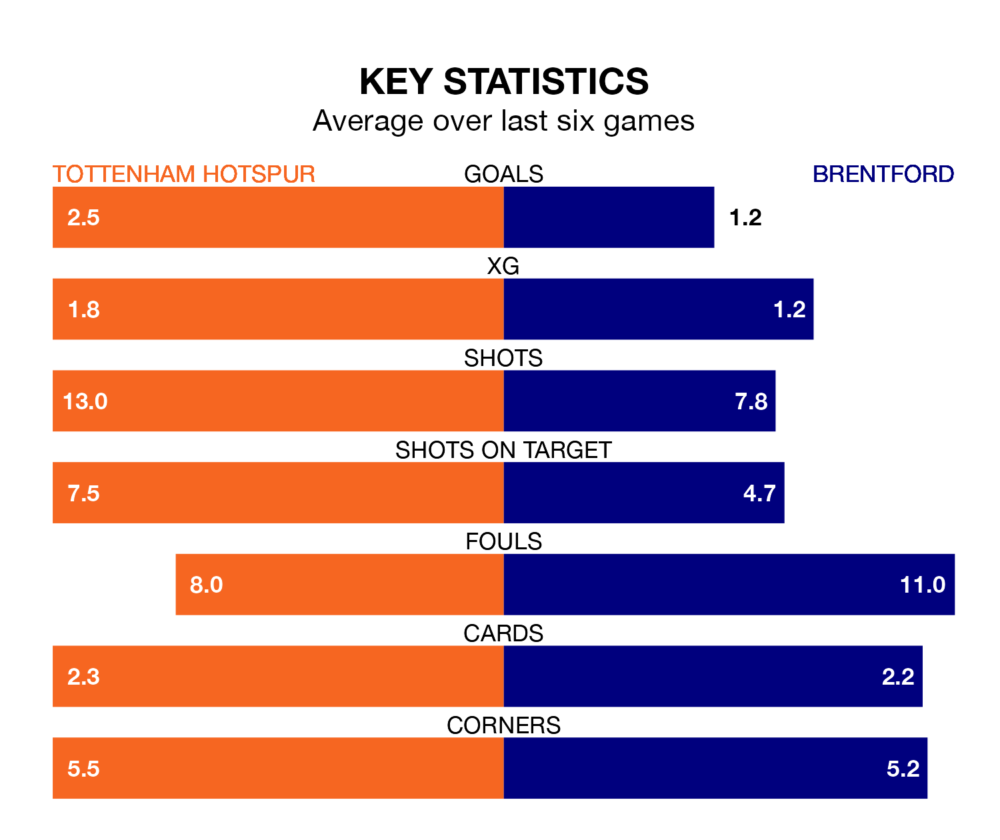

Tottenham Hotspur are heavy favourites to keep all three points at home in Wednesday's late kick-off against Brentford.
Spurs, who sit fifth in the Premier League with 21 games played, are priced at 1.6 to seal victory at the Tottenham Hotspur Stadium.
Sitting 10 places and 18 points behind them in the table, Brentford are 4.3 to win with *Betting Company*, while the draw is at 3.8.
With 44 goals in 21 games so far this season, Spurs are the league's third-highest scorers with 2.1 goals per game. And they are conceding fewer than average, letting in 31 goals at a rate of 1.5 per game.
Brentford, meanwhile, are below average scorers, with 1.4 goals per game, compared to a league average of 1.6. They have conceded 1.6 goals per game.
Tottenham are in good form in the Premier League, with four wins and a draw from their last six games.
With a win and five losses over that period, the Bees's form is much worse – they have taken three points from 18, compared to the hosts' 13.
In the last 10 years, Spurs and Brentford have played each other on six occasions. Spurs won two of them, Brentford one, and they drew three times.
On average, Spurs scored 1.5 goals and the Bees 1.2 in those matches.
Their last meeting was on August 13, when they played out a 2-2 draw.
In Heung-Min Son, Spurs have one of the league's sharpest shooters so far this season. He has notched 12 goals in 20 appearances, to sit third in the scoring charts.
His goal rate of one every 142 minutes is quicker than that of Bryan Mbeumo, the away team's top scorer with a goal every 184 minutes, and a total of seven goals in 15 games.
Spurs's last match was on January 14, a 2-2 draw against Manchester United, with Richarlison and Rodrigo Bentancur getting the goals for Spurs.
Brentford beat Nottingham Forest 3-2 last time out, on January 20, with Ben Mee, Ivan Toney and Neal Maupay on the scoresheet.
Updated: 09:07 (UTC), 24/01/24